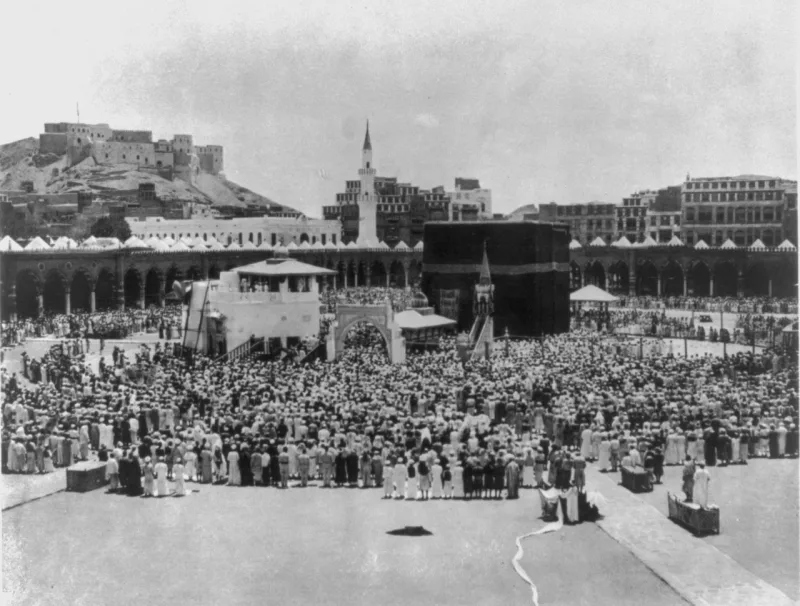

The Muslim answer holds up. Do not lead with this one.
That Muslims claim to oppose idols but worship a black rock, bowing to it and kissing it.
Islam's own canon answers it. Umar kissed the Stone and said: "I know that you are a stone and can neither benefit anyone nor harm anyone.
Had I not seen Allah's Messenger kissing you, I would not have kissed you" (Sahih al-Bukhari 1597). Muslims honour the Stone in imitation of Muhammad, while denying it any power.
Prayer is directed toward the Kaaba as a direction, not to it as an object.
Your friend answers with Umar's hadith in one sentence and wins the exchange. Worse, the charge invites a fair comeback about crosses, icons and relics, and the conversation collapses into arguing about symmetry.
Ask the honest version. Why did a faith founded on smashing idols keep, unchanged, the pre-Islamic rites of circling a shrine and kissing a stone?
Muslim sources document that continuity themselves, and Umar's own puzzlement underlines it.
Origin, not worship. That is the pressure point, and it is the one this site's Kaaba case works with.
"I do not think you worship the Stone. I am asking where the rite came from."

Do not use this: Umar's own words in Bukhari 1597 answer it in one line.
The correction is that Islam's own canon heads off the charge. In Sahih al-Bukhari 1597, Umar kissed the Stone and said this: I know that you are a stone and can neither benefit anyone nor harm anyone. Had I not seen Allah's Messenger kissing you, I would not have kissed you.
Muslims honour the Stone in imitation of Muhammad, while expressly denying it any power. On their own definitions this is not worship. And prayer is directed toward the Kaaba as a direction, the qibla, not to it as an object.
Drop it, and ask about origin instead: that is the real pressure point.
Here is why it backfires. The Muslim answers with Umar's hadith in one sentence and wins the exchange. Worse, the charge invites a fair comeback about crosses, icons and relics, which drags the conversation into arguing about symmetry.
Say this instead. This site's Kaaba case asks the honest version of the question. Why did a religion founded on smashing paganism keep, unchanged, the pre-Islamic rites of circling a shrine and kissing a stone? Muslim sources document that continuity themselves, and Umar's own bewilderment underlines it. Origin, not worship, is the pressure point.